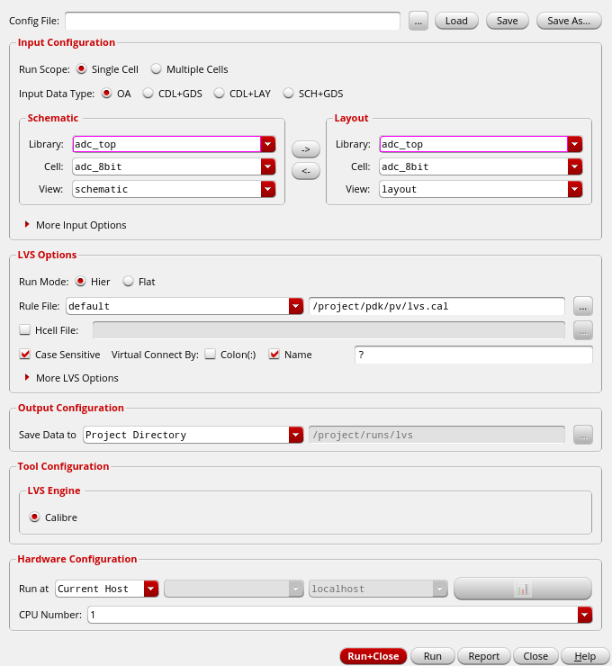

CAD FLOW / LAYOUT VERSUS SCHEMATIC
LVS · 版图与原理图一致性
以 Calibre 比较版图和源网表。OA、CDL 与 GDS 可按实际设计来源组合，层映射与器件定义需要匹配同一工艺。
图形界面：LVS 主表单


从 SiCo → LVS 打开。LVS 的关键是让“源电路”和“版图”指向同一设计，并确认 Rule File、Hcell 与输入格式匹配。
| 页面/控件 | 详细说明 | 使用要点 |
|---|---|---|
| Config File + Load / Save / Save As… | 载入或保存 LVS Profile。 | 加载后重新核对本次 library / cell / view，Profile 不应替代设计身份检查。 |
| Run Scope | Single Cell 或 Multiple Cells；多 cell 时显示双栏 Mapping 编辑器。 | 多 cell 的每组 schematic / layout 都要完整；不要混入不同 top cell。 |
| Input Data Type | OA、CDL+GDS、CDL+LAY、SCH+GDS。选择后只启用对应输入区。 | 输入组合决定哪些文件必须存在，以及是否需要层映射。 |
| Schematic Library / Cell / View | OA 源电路身份，view 通常为 schematic。 | CDL 输入时改用 CDL File Path 与 Cell Name。 |
| Layout Library / Cell / View | OA 版图身份，view 通常为 layout。 | CDL+LAY 或 OA 输入需要 TECH_LAYER_MAP；GDS 输入改用文件与 top cell。 |
| CDL File Path / Cell Name | 已有 CDL 文件及其 top cell 名称。 | 文件必须可读；Cell Name 是 CDL 内实际 subckt 名，不是文件名猜测。 |
| GDS File Path / Cell Name | 已有 GDS 文件及其 top cell。 | GDS 来自其他端口时先确认层号、单位与 top cell 一致。 |
| → / ← 按钮 | 把 Schematic 或 Layout 的 library / cell 复制到另一侧。 | 只同步名称，不复制文件；view 和非空输入仍需手动确认。 |
| More Input Options → CDL Include | 启用并选择 CDL include 文件，通常为 PDK 器件定义。 | CDL_HEADER_FILE 非空时默认启用；没有文件时不要保留占位路径。 |
| Run Mode | Hier 使用层次化比较和 CPU；Flat 固定 1 CPU。 | Hier/Flat 必须与 runset 和设计层次预期一致。 |
| Rule File | LVS runset 的显示名与路径，来源为 LVS_FILE。 | 不要误用 RCE 的前置 LVS 文件；RCE 使用独立的 RCE_LVS_FILE。 |
| Hcell File 开关与路径 | 指定 Hcell 列表；关闭时不传该文件。 | Hcell 会改变层次比较边界；启用前核对列表中的 cell 确实应作为黑盒。 |
| Case Sensitive | 控制网络/器件名大小写敏感性。 | 默认开启；关闭前确认版图与网表命名差异是设计意图，而不是命名错误。 |
| Virtual Connect By | 选择 Colon(:) 或 Name，并在名称字段填写规则。 | 虚拟连接会放宽物理连接要求；只在工艺或设计明确要求时使用。 |
| More LVS Options | 展开后显示 SVDB query、Recognize Logic Gate 与 Customized SVRF Command。 | SVDB query 影响后续 RCE/查询数据，不是装饰性选项。 |
| SVDB query | 可选 CCI、SI、RECON、IXF+NXF+SLPH、PINLOC，允许多选。 | 按后续工具需求选择；不需要查询数据时不额外生成。 |
| Recognize Logic Gate | NONE、ALL、SIMPLE。 | 改变逻辑门识别方式；默认 NONE，确认工艺 runset 支持后再改。 |
| Customized SVRF Command | 追加用户 SVRF 命令。 | 只用于已确认的补充命令，不能替代 foundry runset。 |
| Save Data to | 项目、当前或自定义输出根。 | SVDB 位于运行目录下的 db/svdb.<top_cell>；确认输出根可写。 |
| LVS Engine | 当前为 Calibre。 | 用 command -v calibre 核对实际可执行文件。 |
| Run at / Queue / Host / LSF | 选择当前主机或 LSF；LSF 按钮打开负载监控器。 | 队列和主机必须已验证；不要只看表单中的默认值。 |
| CPU Number / Parallel Cells | Hier 的 CPU 数与多 cell 并行数。 | 受队列槽位、内存和许可证限制。 |
| Run+Close / Run / Report / Close | 运行后关闭、运行保留、打开报告、关闭表单。 | Report 读取已有结果；无成功运行时不要据此判断 LVS 通过。 |
比对结论看报告，不看窗口是否关闭。 LVS 完成后检查比较报告和 RVE。若出现 mismatch，先核对双方 top cell、器件定义、全局网络、Hcell 与规则版本，再决定是否重跑。
配置项目输入
Bash · LVS 环境
export LVS_FILE="default,$PDK_ROOT/pv/lvs.cal"
export LVS_DB_DIR="$PROJECT_ROOT/runs/lvs"
export LVS_DEF_TOOL="Calibre"
export CDS_LIB="$PROJECT_ROOT/cds.lib"
export TECH_LAYER_MAP="$PDK_ROOT/stream/streamOut.map"
# 工艺或项目需要时配置；没有文件就不要设置占位值。
export CDL_HEADER_FILE="$PDK_ROOT/cdl/devices.cdl"
export HCELL_FILE="$PROJECT_ROOT/config/hcell.list"
command -v calibre si strmout非空 CDL_HEADER_FILE 预填 CDL Include，非空 HCELL_FILE 默认启用 Hcell。表单中的最终勾选与文件选择决定本次运行内容。
选择输入组合
| 输入 | 源电路 | 版图 |
|---|---|---|
| OA | schematic library / cell / view | layout library / cell / view |
| CDL+GDS | 已有 CDL 与 top cell | 已有 GDS 与 top cell |
| CDL+LAY | 已有 CDL | OA layout，需层映射 |
| SCH+GDS | OA schematic，按需 CDL Include | 已有 GDS |
运行与判读
- 选择 SiCo → LVS，加载需要的 LVS Profile。
- 指定输入组合及双方 top cell，检查 runset、Hcell 与 CDL Include。
- 按工艺要求设置 Case Sensitive、Virtual Connect、Recognize Gates 等选项；不要用宽松选项掩盖未确认的连接问题。
- 选择 Hier 或 Flat。Hier 使用选定 CPU；Flat 不传层次/turbo 参数并固定 1 CPU。
- 运行完成后检查比较报告，需要时打开 RVE 定位不匹配。LVS 的 RVE 数据库位于
db/svdb.<top_cell>。
LVS 与 RCE 前置 LVS 分别配置。 此页使用
LVS_FILE；QRC / StarRC 寄生提取使用 RCE_LVS_FILE，不会自动回退到这里。后者通常需要满足 CCI/query 的抽取配套要求。命令行入口
Shell · 使用完整运行 TOML
lvs run /path/to/run/lvs.toml --dry-run
lvs generate /path/to/run/lvs.toml
lvs run /path/to/run/lvs.toml
lvs report /path/to/run/lvs.tomlCLI 在当前主机执行。运行目录保留本次 TOML、导出的中间 CDL/GDS、工具日志和 SVDB。若结果显示 mismatch，检查双方 top cell、器件定义、全局网络、Hcell 与规则版本后再重跑。
保存团队设置
用 Save As… 保存 LVS Profile，并通过 LVS_CONFIG 预填下一次表单的 Config File。共享 Profile 适合保存工艺选项；运行目录和设计身份在每次 Run 前仍应核对。